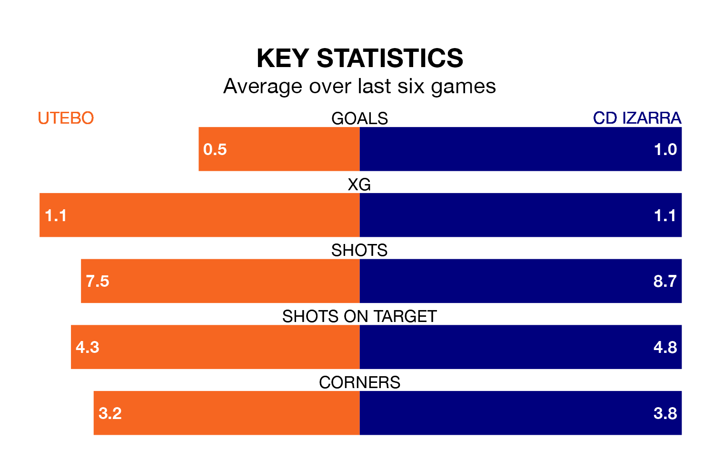

Utebo are heavy favourites to keep all three points at home in Sunday's late kick-off against CD Izarra.
Utebo, who sit sixth in the Segunda División RFEF Group 2 with 22 games played, are priced at 1.5 to seal victory at the Estadio Santa Ana.
Sitting eight places and 20 points behind them in the table, Izarra are 6.5 to win with *Betting Company*, while the draw is at 3.6.
With 20 goals in 22 games so far this season, Izarra are scoring at below the league average rate with 0.9 goals per game. And they are conceding more than average, letting in 33 goals at a rate of 1.5 per game.
Utebo, meanwhile, are above average scorers, with 1.2 goals per game, compared to a league average of 1.1. They have conceded 1.0 goal per game.
The home team are in disappointing form in the Segunda División RFEF Group 2, with one win and three draws from their last six games.
And also with a win and three draws over that period, the visitors' form is identical – they have both taken six points from 18.
In the last three years, Utebo and Izarra have played each other on three occasions. Utebo won all of them.
Their last meeting was on October 8, when Utebo won 2-1 away.
Utebo's last match was on February 11, a 1-0 loss against CD Calahorra.
Izarra beat UD Barbastro 2-0 last time out, also on February 11, with Gorka Laborda García on the scoresheet.
Updated: 12:06 (UTC), 15/02/24